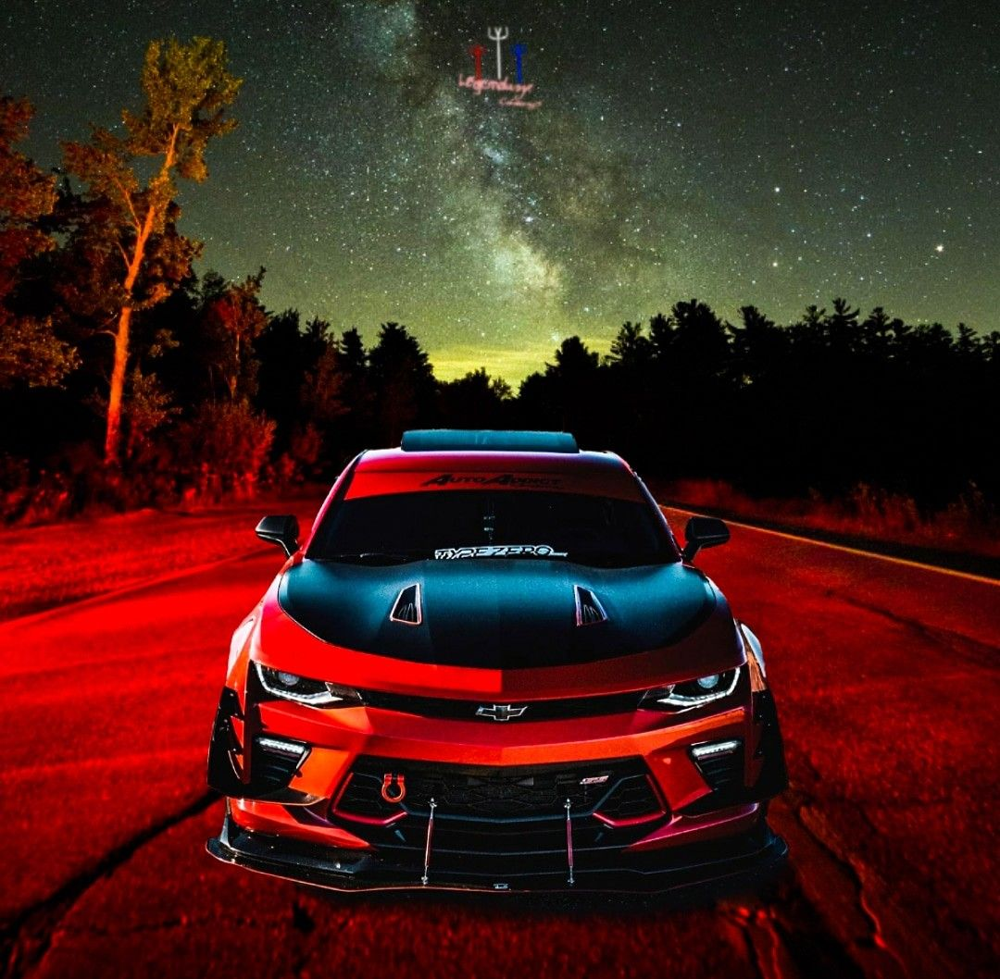

Facebook Es una red social pensada para conectar personas, es decir, compartir información, noticias y contenidos audiovisuales con amigos y familiares. Se trata de la plataforma social más popular de todas las existentes en la actualidad con cerca 2.400 millones de usuarios activos cada mes.
